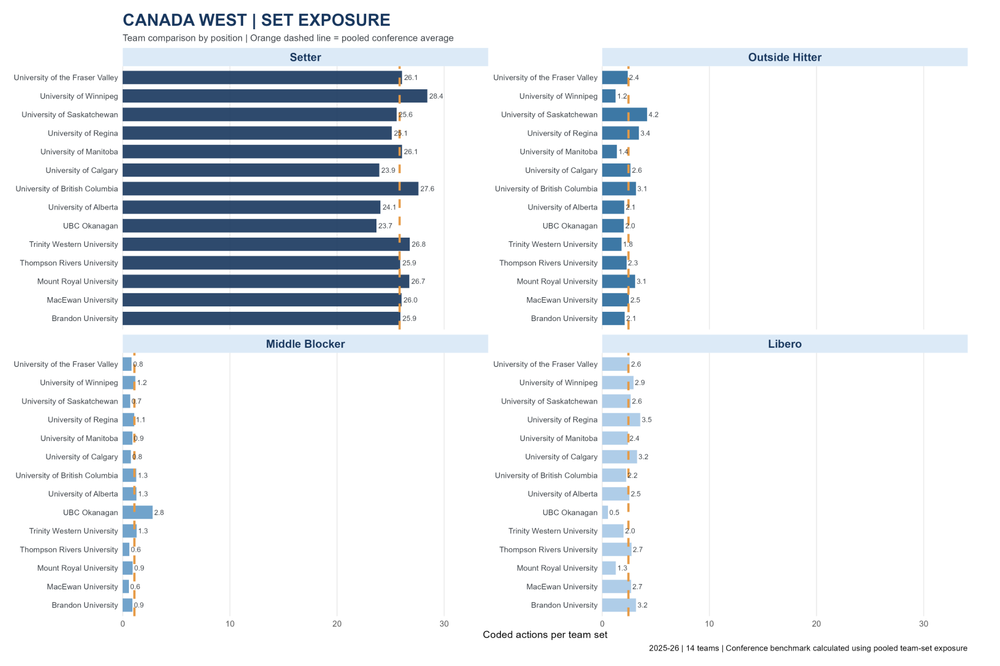
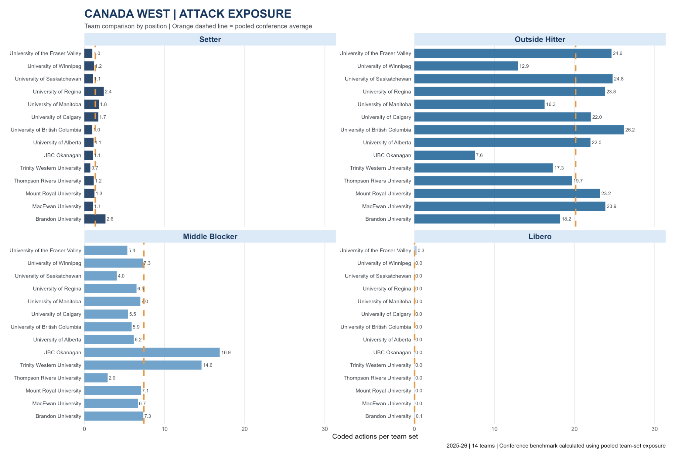
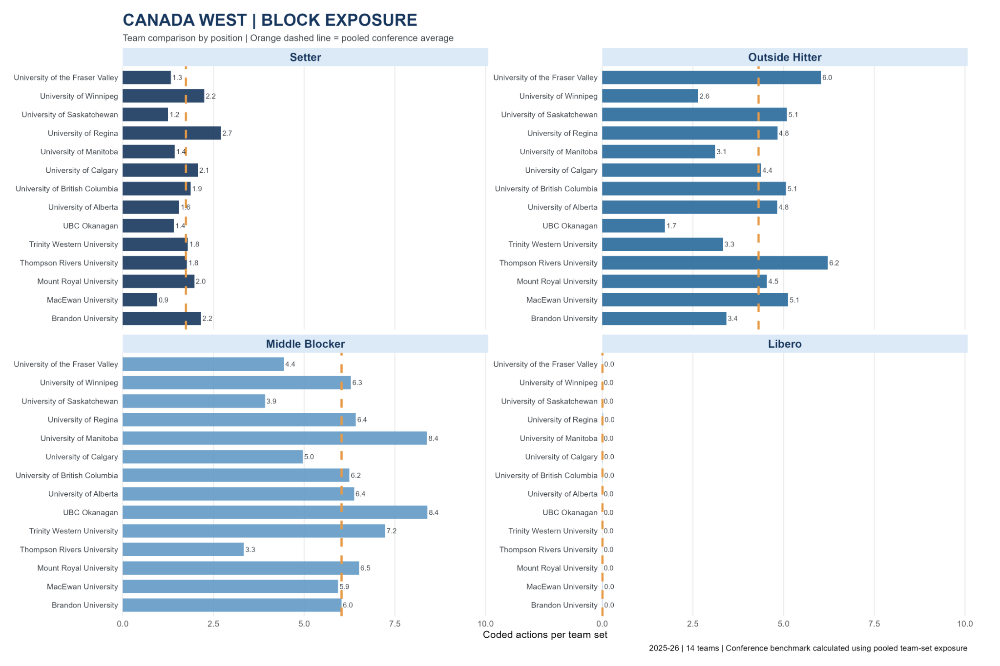
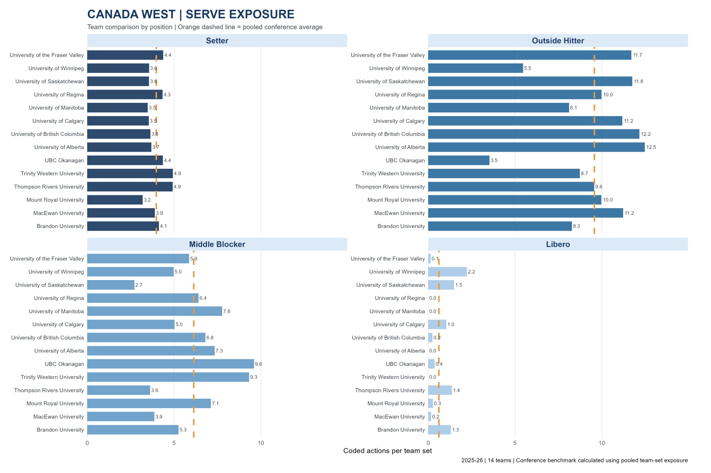

Understanding Position-Specific Workload Patterns
The purpose is to estimate position-specific action exposure across Canada West, expressed as coded actions per team set. This common rate allows comparisons between teams that played different numbers of sets.
How to Read the Comparisons
Each bar represents a team's average coded actions per team set for a position and action. The orange dashed line is the pooled Canada West average, calculated as total conference actions divided by 1,038 team-set appearances.
How Action Exposure Differs by Position
The four conference charts show team-level rates for setting, attacking, blocking and serving. Positions are shown separately so each role can be interpreted in its own technical context.
Set Exposure
All 14 teams
Attack Exposure
All 14 teams
Block Exposure
All 14 teams
Serve Exposure
All 14 teams
Estimated Jump/Action Exposure Per Set by Position
The tables compare Calgary's coded action rate with the pooled Canada West average for each position. For this study-defined estimate, Attack, Block, Serve and Set actions are each counted as one jump-equivalent action. Position totals are intentionally omitted so the comparison stays focused on the four action types.
Setter
Calgary's setter action rates compared with Canada West.
| Action | Calgary | Conf. Avg. |
|---|---|---|
| Attack | 1.72 | 1.36 −0.36 |
| Block | 2.07 | 1.74 +0.33 |
| Serve | 3.54 | 3.97 −0.43 |
| Set | 23.94 | 25.84 −1.90 |
Outside Hitter
Calgary's outside hitter action rates compared with Canada West.
| Action | Calgary | Conf. Avg. |
|---|---|---|
| Attack | 22.04 | 20.14 +1.90 |
| Block | 4.38 | 4.31 +0.07 |
| Serve | 11.18 | 9.57 +1.61 |
| Set | 2.64 | 2.45 +0.19 |
Middle Blocker
Calgary's middle blocker action rates compared with Canada West.
| Action | Calgary | Conf. Avg. |
|---|---|---|
| Attack | 5.46 | 7.41 −1.95 |
| Block | 4.96 | 6.03 −1.07 |
| Serve | 5.03 | 6.13 −1.10 |
| Set | 0.75 | 1.09 −0.34 |
Libero
Calgary's libero action rates compared with Canada West.
| Action | Calgary | Conf. Avg. |
|---|---|---|
| Attack | 0.00 | 0.03 −0.03 |
| Block | 0.01 | 0.01 ≈0.00 |
| Serve | 1.04 | 0.62 +0.42 |
| Set | 3.25 | 2.44 +0.81 |
Values are rounded to two decimal places. Conference averages are pooled action totals divided by 1,038 team-set appearances.
Turning the Numbers into Useful Questions
The strongest use of these comparisons is to guide follow-up questions, not to treat a higher rate as automatically better or worse.
1. Identify Higher-Volume Roles
Use the position panels to identify roles and teams with higher coded attack, block, serve or set involvement per set. This can help prioritize which positions warrant a closer review of match demands.
2. Add Match Context
Compare the rates with rotations, opponent quality, match length, substitutions, player availability and tactical choices. Team averages can conceal large differences between individual athletes.
3. Validate Jump-Related Demands
Review video or use a validated jump-monitoring method to determine which attacks and blocks involved a jump, how many athletes participated, and whether jump sets or jump serves occurred.
4. Use the Benchmark as Context
The pooled conference line is a descriptive reference point, not a target or ideal workload. A team's tactical style and personnel can reasonably produce a different action profile.
How the Estimate Was Built
The analysis was built from coded play-by-play actions in 140 Canada West DVW files. Team rates use each team's total sets played as the denominator.
Collect
Parse the 140 regular-season DVW files and retain coded attack, block, serve and set actions.
Assign Positions
Map athletes to Setter, Outside Hitter, Middle Blocker and Libero. Opposite/right-side roles are grouped with Outside Hitter for this analysis.
Normalize
Calculate each team's action total for a position and action, then divide by that team's total sets played.
Interpretation and Limitations
- Operational assumption: This version counts each coded Attack, Block, Serve and Set as one jump-equivalent action to create a consistent study-defined workload estimate.
- Not verified physical jumps: The DVW action codes do not confirm that every attack or block involved a jump, that a set was a jump set, or that a serve was a jump serve.
- Block participation: One coded block action may involve multiple blockers; the data do not establish how many athletes jumped on each play.
- Team rates are not individual athlete loads: Substitutions, player-specific court time and individual participation are not reflected in the team-set denominator.
- Benchmark is descriptive: The pooled average is weighted by team-set appearances and is not a recommended workload threshold.
Conclusion
This analysis provides a conference-wide baseline for understanding how coded volleyball actions are distributed across positions and teams. The Dinos comparison highlights where Calgary's position-specific action rates differ from the pooled Canada West pattern. The estimate can support workload discussions and help identify where more detailed video or athlete-level jump monitoring would be valuable.
Prepared from the 2025–26 Canada West DVW action dataset and the supplied team comparison graphics and summary values.